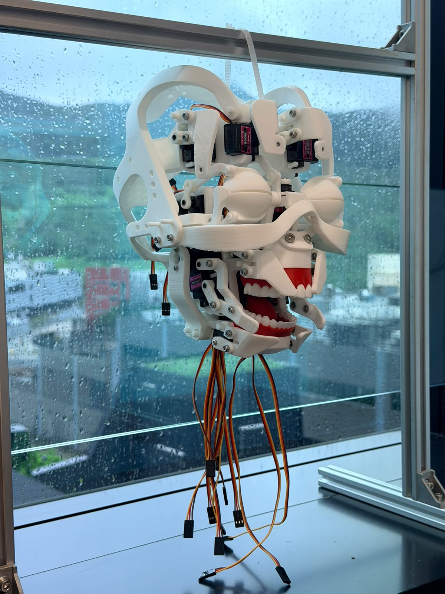

TEACHING
Courses built around making and judgement.
Current teaching at HKUST connects design decisions, physical principles and iterative prototyping.
Final Year Design Project I
Define a consequential problem, establish feasibility and lead a multidisciplinary design project.
Course details ISDN 3000BCreative Machine Design
Use mechanisms, transmissions and physical prototyping to design machines that move as intended and survive operation.
Course details
ISDN 4000X · SPRING 2026
Life-like Robot Design
Design mechanisms, coordinated motion and a final expressive robotic performance.
Explore the course